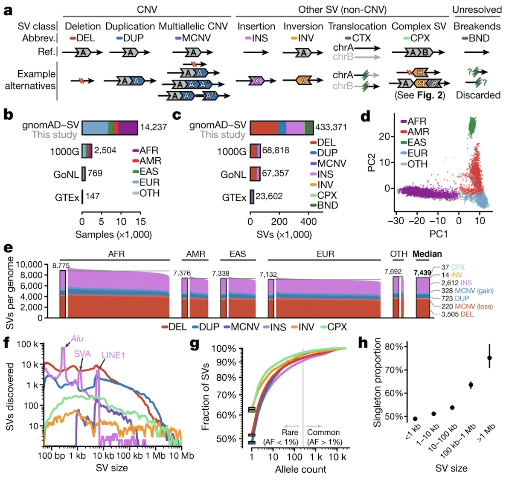
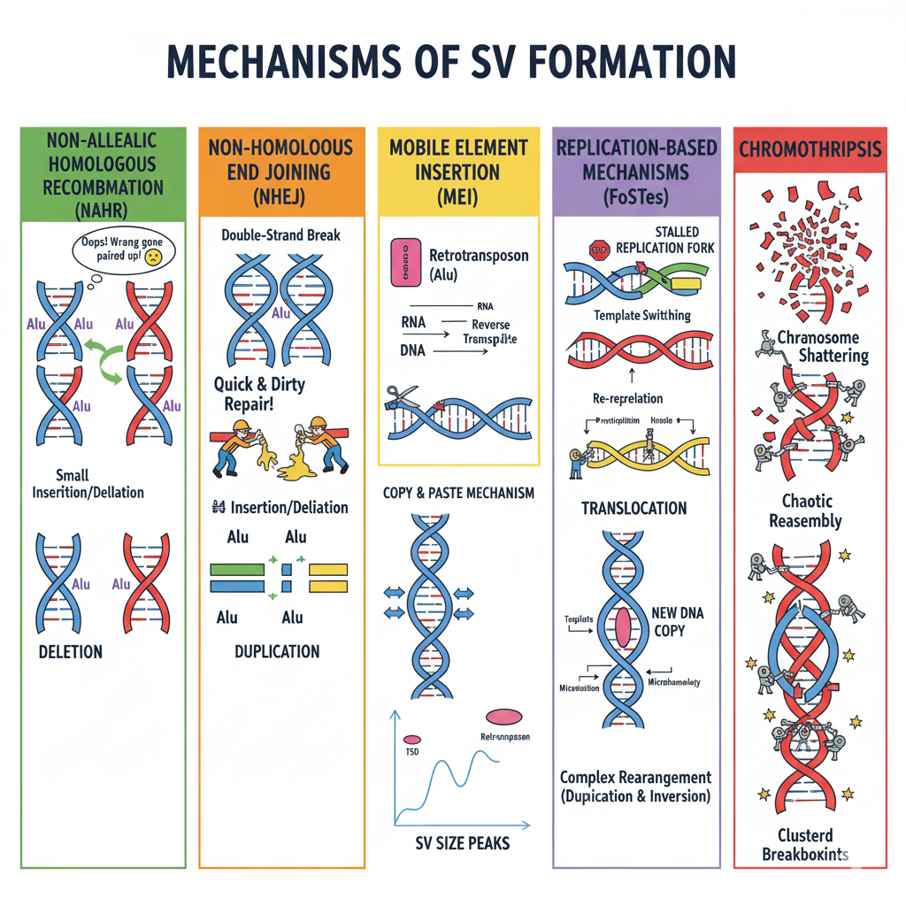
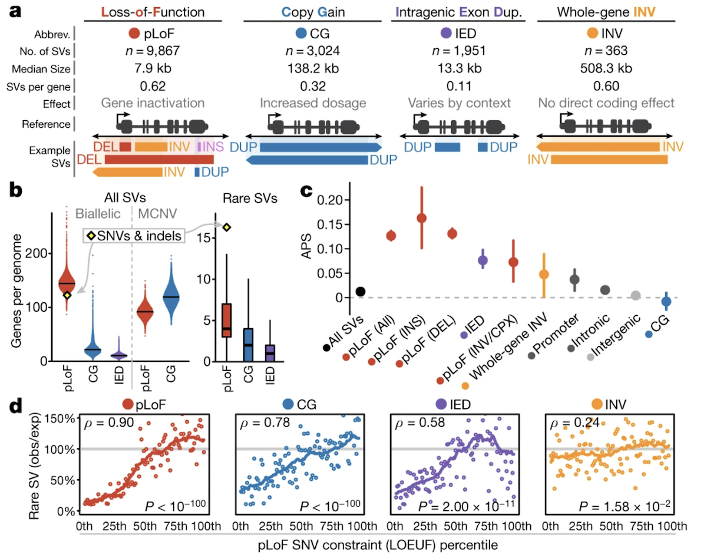

BSMS205 · Genetics
Structural Variations
Chapter 13 · Part II · Variation
Welcome to Chapter thirteen, the final chapter of Part Two. Across this part of the course we have built up our picture of human genetic variation one layer at a time — single-letter changes, indels, dominant alleles, recessive alleles. Today we zoom out and look at the biggest changes the genome can carry: structural variants, or S Vs. These are rearrangements of fifty base pairs or longer, sometimes stretching to millions. We will define them, classify them, see how many each of us carries, learn the molecular mechanisms that produce them, and understand why they matter for disease. This is also our bridge into Part Three, where we move from single-gene disorders to traits influenced by many variants.
A question to start with
What if a wholeparagraph moves?
Here is the analogy I want you to hold today. Until now, we have been studying single-letter typos in the genome — a C becomes a T, an A becomes a G. That is what an S N V is. But today's chapter is different. Today we are talking about whole paragraphs being cut out, duplicated, flipped upside down, or moved to a different chapter of the book. The genome does this, and it does it surprisingly often. These are structural variants. The scale is completely different from anything we have looked at before.
From single letters to whole chunks
SNVs & indels
1 base changed"cat" → "bat"
Easy to detect
Structural variants
≥ 50 bp rearrangedWhole paragraph moves
Hard to detect
Let's contrast S N Vs with structural variants directly. An S N V changes one letter — c-a-t becomes b-a-t. An indel adds or removes a few letters. Easy to describe, easy to detect with short reads. A structural variant is anything fifty base pairs or larger. That is the formal cutoff. S Vs can be deletions, duplications, inversions, translocations, insertions — and they can stretch from fifty bases to millions. They are much harder to detect because the rearrangement often spans repetitive regions where short reads cannot find a unique landing spot. We will come back to that detection problem.
The number that should surprise you
~7,439
structural variants per genome (median)
From gnomAD-SV · 14,891 genomes
More than twice the 1000 Genomes estimate
Most are silent — but some cause disease
Here is the headline number. Each of us carries a median of about seven thousand four hundred S Vs. That is not a typo. Seven thousand large rearrangements per genome. This number comes from the gnomAD-S V reference, built from fourteen thousand eight hundred ninety-one genomes by Collins and colleagues in twenty twenty, published in Nature. The earlier one thousand Genomes estimate was about three thousand four hundred — less than half. Why the gap? Better sequencing depth. Most of these S Vs are silent variation, just part of normal human diversity. But a small fraction disrupts critical genes, and those are the ones that cause disease.
Roadmap for today
What is an SV — definition & types
The gnomAD-SV catalog · 14,891 genomes
How many SVs & what sizes
Five mechanisms of SV formation
Functional impact & selection
Clinical syndromes from SVs
Summary & bridge to Part III
Here is how we will move today, in seven sections. First we define structural variants and walk through every type. Second we look at the gnomAD-S V dataset, the most comprehensive S V catalog to date. Third we ask how many each person carries and what sizes they come in. Fourth we look at the five molecular mechanisms that actually create S Vs in our genomes. Fifth we ask what functional impact they have and how natural selection responds. Sixth we look at famous clinical syndromes caused by S Vs. And finally we wrap up and bridge into Part Three, where we leave the world of single-gene disorders for complex traits.
§ 1
What Is a
Let's start with definition and classification. The key cutoff is fifty base pairs. The key question for classifying any S V is whether it changes the total amount of D N A in the genome — what we call copy number.
The 50-bp cutoff
Below 50 bp → indel
50 bp or larger → structural variant
SVs can stretch to millions of base pairs
Cutoff is operational — reflects detection limits
SNV = typo · indel = word edit · SV = paragraph rearrangement
The cutoff is operational. Anything below fifty base pairs we call an indel. Fifty and above, we call a structural variant. The size range above fifty is enormous — from small fifty-base deletions all the way to multi-megabase rearrangements that span entire genes. The reason for the cutoff is partly technical. Below fifty bases, short-read sequencing handles things well. Above fifty bases, you need different detection approaches. The mental model is: an S N V is a typo in one letter, an indel is a word-level edit, and an S V is a paragraph being rearranged.
Two big categories
Copy number altering
Deletions (DEL) Duplications (DUP) Insertions (INS) MCNVs · multi-allelic CNVs
Copy number neutral
Inversions (INV) Translocations (BND) Complex SVs
S Vs split into two big categories based on whether they change the total amount of D N A. Copy number altering S Vs add or remove genomic material — that is deletions, duplications, insertions, and multi-allelic copy number variants where different people have different numbers of copies at the same place. Copy number neutral S Vs rearrange D N A without changing the total amount — that is inversions, where a segment is flipped one hundred eighty degrees, and translocations, where segments swap between chromosomes. Complex S Vs combine multiple types in a single event. The distinction matters because copy number altering S Vs directly change gene dosage, whereas copy number neutral S Vs only matter when they break a gene at the breakpoint.
The seven SV types · cheat sheet
Code Type What it does CN?
DEL Deletion Removes a segment Altering DUP Duplication Extra copy of a segment Altering INS Insertion New DNA added (often Alu/L1/SVA) Altering MCNV Multi-allelic CNV Variable copy count across people Altering INV Inversion Segment flipped 180° Neutral BND Translocation Swap between chromosomes Neutral CPX Complex Multiple rearrangements together Either
Here is the full cheat sheet you should be able to recognize. D E L is deletion — D N A removed, copy number goes down. D U P is duplication — extra copy, copy number goes up. I N S is insertion — new D N A added, often a mobile element. M C N V is multi-allelic copy number variant, where different people carry different numbers of copies. I N V is inversion — same bases, flipped one eighty. B N D is breakend, the formal term for translocation, where segments swap between chromosomes. And C P X is complex — multiple types combined, like an inversion flanked by deletions. Memorize the codes; you will see them in any S V output.
The Collins 2020 SV catalog

Figure 1. Classification of SV types. Top row: copy number altering (DEL, DUP, INS, MCNV). Bottom row: copy number neutral and complex (INV, BND, CPX). Each type has distinct molecular signatures and functional consequences. Source: Collins et al. 2020, Nature .
Here is the canonical figure from Collins and colleagues, twenty twenty, in Nature. It shows every S V type as a schematic. Copy number altering on top — deletion removes a colored block, duplication adds an extra one, insertion brings in a new block from outside, multi-allelic C N V shows variable counts. Copy number neutral on the bottom — inversion flips a block, translocation moves a block between chromosomes, complex S V combines multiple events. The colors track segments through the rearrangement. This is the visual vocabulary you should associate with the seven type codes we just listed.
Mobile elements · the inserted sequences
Element Length Note
Alu ~300 bp Most abundant mobile element SVA ~2,100 bp SINE-VNTR-Alu composite LINE1 ~6,000 bp Long Interspersed Nuclear Element 1
These three create distinctive size peaks in the SV distribution.
Most insertions in human genomes come from three classes of mobile elements. Alu elements are the smallest, around three hundred base pairs, and the most abundant — there are over a million Alu copies in our genome. S V A is a composite element about two thousand one hundred bases, combining features of S I N E, V N T R, and Alu sequences. L I N E one is the largest at about six thousand bases. Each of these can copy itself and insert into a new location. The distinctive sizes — three hundred, two thousand one hundred, six thousand — actually show up as visible peaks when you plot the size distribution of all human S Vs. We will see that plot in a moment.
§ 2
The gnomAD-SV
Now let's look at the dataset that gives us most of what we know about S Vs in human populations. The gnomAD-S V reference. Same gnomAD project we have been using throughout the course, extended to structural variants.
Building gnomAD-SV
14,891 genomes analyzed54% non-European ancestryAfrican, Latino, East Asian, European groups
Diverse cohort → SV patterns differ across populations
The most comprehensive SV reference to date.Nature .
The dataset is large and deliberately diverse. Fourteen thousand eight hundred ninety-one genomes total. Fifty-four percent non-European — that includes African, Latino, East Asian, and European ancestry groups. Why does that matter? Because S V patterns differ across populations. Bottlenecks, expansions, and migrations all leave fingerprints in the S V landscape. A reference built only from European genomes would miss variants common in other populations. This is the most comprehensive S V reference to date, published by Collins and colleagues in Nature in twenty twenty.
How many SVs in the catalog?
433,371
distinct SVs across all genomes
7,439
median per individual
Earlier estimate: 3,441 per genome (1000 Genomes) — half as many.
Two numbers to anchor. Across the entire cohort, the catalog identified four hundred thirty-three thousand three hundred seventy-one distinct S Vs — that is the total richness of the human S V landscape they could see. Per individual, the median was seven thousand four hundred thirty-nine. Compare that with the earlier one thousand Genomes Project, which estimated three thousand four hundred forty-one per genome — less than half. Why the doubling? The gnomAD-S V cohort had higher sequencing coverage and better S V calling tools. As technology improves, our estimates of how much variation each of us carries keep going up.
Size matters · three telltale peaks
Most SVs are under 10 kb
Distinct peaks at 300 · 2,100 · 6,000 bp
These are Alu · SVA · LINE1 insertions
Mobile elements still actively reshape the genome
When you plot the size distribution of all the S Vs, three peaks pop out at three hundred, two thousand one hundred, and six thousand base pairs. Those peaks are not coincidence. They are the signatures of Alu, S V A, and L I N E one insertions. Mobile elements still actively jump around in human genomes today, and every time they do, they leave behind a new insertion of their characteristic size. The peaks are evidence that these elements are not relics — they are alive in our genome right now.
Half of all SVs are singletons
49.8%
of SVs found in only ONE person out of 14,237
Many are recent mutations
Many disrupt important genes → kept rare by selection
Larger SVs → rarer than smaller ones
Here is a striking finding. Almost half — forty-nine point eight percent — of all S Vs in gnomAD-S V are singletons. They appear in only one person out of fourteen thousand two hundred thirty-seven analyzed. Why so rare? Two reasons. Some are very recent mutations that have not had time to spread through the population. But many of the rest are kept rare because they break important genes, and natural selection removes them. The pattern is consistent — the larger the S V, the rarer it is on average. A small S V might be tolerable; a large one that spans multiple genes is much more likely to be harmful.
Population structure · same as SNVs
PCA on 15,395 common SVs separates ancestry groups
African, European, East Asian, Latino — all distinct clusters
SV patterns reflect demographic history
Some SVs are common in one population, absent in another
And the population genetics matches what we see with S N Vs. When researchers ran principal component analysis on fifteen thousand three hundred ninety-five common S Vs, people clustered by ancestry — African, European, East Asian, Latino — same as you would see with S N V data. This means S V patterns track demographic history. Bottlenecks, expansions, and migrations shape S V frequencies just like they shape S N V frequencies. Some S Vs are common in one population and absent in another. This matters for clinical genetics — a reference built only from one population will miss variants that matter for everyone else.
§ 3
Five Mechanisms
How do S Vs actually form? Five mechanisms cover almost every S V you will encounter — N A H R, N H E J, mobile element insertion, fork stalling and template switching, and chromothripsis. Each leaves a characteristic signature, which is how researchers can tell them apart from sequencing data.
Five mechanisms · one figure

Figure 2. Five mechanisms generate SVs. NAHR (homologous misalignment), NHEJ (broken-end gluing), MEI (copy-paste via RNA), FoSTeS (replication template switching), Chromothripsis (catastrophic shattering). Each leaves distinct breakpoint signatures.
Here are all five mechanisms in one cartoon. N A H R, where two similar but non-allelic sequences mistakenly pair and recombine. N H E J, where a double-strand break is sealed without a template. M E I, where a mobile element copies itself via R N A and inserts somewhere new. FoSTeS, where a replication fork stalls and switches templates. And chromothripsis, where a chromosome shatters and gets reassembled chaotically. We will go through each one. Each leaves a distinct fingerprint at the breakpoints — the kind of microhomology, the size, the genomic context — and that is how we infer mechanism from sequencing data.
Mechanism 1 · NAHR
Non-Allelic Homologous Recombination Two similar repeats misalign during meiosis
Recombination between them → deletion + duplication
Common in segmental duplications
Homologous sequences that shouldn't recombine — do.
Mechanism number one — non-allelic homologous recombination, abbreviated N A H R. During meiosis, chromosomes pair up and exchange segments. Normally the matching sequences line up perfectly. But if two repetitive elements that are at different positions — say, two Alu elements separated by a few thousand bases — mistakenly pair up, recombination between them produces a deletion on one chromosome and a duplication on the other. The cell got fooled by sequence similarity. N A H R happens most often in regions with segmental duplications — large blocks of nearly identical sequence scattered across the genome. The breakpoints fall inside the homologous regions.
Mechanism 2 · NHEJ
Non-Homologous End Joining Repair of double-strand breaks
Glue ends together without a template
Signature: microhomology (1–10 bp) or blunt junctions
Quick & dirty repair. Often joins the wrong ends.
Mechanism two — non-homologous end joining, N H E J. Cells suffer double-strand breaks all the time. Some get repaired carefully using a homologous template. But many get repaired by N H E J, which is quick and dirty — the cell just glues the broken ends together without checking sequence. Sometimes that works fine. Sometimes the cell joins the wrong ends, creating translocations or complex rearrangements. The signature in the data is microhomology — just one to ten matching base pairs at the junction — or completely blunt junctions where there is no overlap at all. N H E J does not need similarity to operate, which is exactly why it can produce such a wide variety of S Vs.
Mechanism 3 · Mobile Element Insertion
Mobile element transcribed to RNA
RNA reverse-transcribed back to DNA
New copy inserts at a new location
Signature: target-site duplications (2–20 bp) flanking the insert.
Mechanism three — mobile element insertion, often called M E I or retrotransposition. The mechanism is copy-and-paste through an R N A intermediate. Step one, the mobile element D N A gets transcribed into R N A. Step two, that R N A is reverse-transcribed back into D N A by the element's own enzyme. Step three, the new D N A copy inserts itself somewhere new in the genome. The signature in the data is target-site duplications — short repeated sequences of two to twenty base pairs that flank the insertion. These are formed when the insertion machinery cuts the target D N A. Each of us carries hundreds of these mobile element insertions, and they are the origin of the size peaks we saw earlier.
Mechanism 4 · FoSTeS
Fork Stalling and Template Switching Replication fork stalls on difficult sequence
Machinery switches to a different template
Result: complex SVs with multiple breakpoints
Common in fragile sites — regions prone to replication stress.
Mechanism four — FoSTeS, which stands for fork stalling and template switching. D N A replication is normally smooth, but sometimes the replication fork stalls. Maybe it hits a difficult-to-replicate sequence, maybe there is damage in the template. When the fork stalls, the replication machinery can switch to a different D N A template — sometimes far away — and finish copying there before switching back. The result is a complex S V with multiple breakpoints, often with microhomology signatures at each junction. FoSTeS happens most often in fragile sites — regions that are prone to replication stress. The S Vs it produces can be copy number neutral or altering depending on what got switched.
Mechanism 5 · Chromothripsis
"Chromosome shattering."
Chromosome shatters into many fragments at once
Cell tries to reassemble — often chaotically
Result: many breakpoints clustered in one region
Rare in healthy people · common in cancer
Mechanism five is the most dramatic — chromothripsis, which literally means chromosome shattering in Greek. In a single catastrophic event, a chromosome or chromosomal region breaks into dozens or even hundreds of pieces simultaneously. The cell's repair machinery frantically tries to put it back together, but not always in the right order. The result is a complex S V with many breakpoints clustered in one region, often combining deletions, duplications, and inversions in a chaotic mosaic. Chromothripsis is rare in healthy individuals but much more common in cancer cells, where it can drive tumor evolution by disrupting many genes at once. The signature is unmistakable — clustered breakpoints in a small region, with evidence of patchwork reassembly.
Mechanisms · at a glance
Mechanism Trigger Typical SV
NAHR Misaligned repeats in meiosis DEL · DUP · INV NHEJ Double-strand break BND · CPX MEI Active retrotransposon INS (Alu / SVA / L1) FoSTeS Stalled replication fork CPX with microhomology Chromothripsis Catastrophic shattering Clustered CPX
Here are the five mechanisms in one table. N A H R produces deletions, duplications, and inversions when repetitive elements misalign during meiosis. N H E J produces translocations and complex rearrangements when double-strand breaks are sealed without templates. M E I produces insertions when active retrotransposons jump. FoSTeS produces complex S Vs with microhomology when replication forks stall and switch templates. Chromothripsis produces clustered complex rearrangements when chromosomes shatter catastrophically. Each leaves a different signature, and that is how researchers can read the molecular history of an S V from the sequence at its breakpoints.
§ 4
Impact &
Now the part that connects S Vs back to disease. What do these rearrangements actually do? Two big effects — gene dosage and structural disruption. And we will see how natural selection responds to each.
Gene dosage · the dominant effect
25–29%
of rare protein-truncating events come from SVs
Comparable to the impact of nonsense SNVs
Delete an exon → loss of function , same as a stop codon
Duplicate a gene → too much protein product
Here is the headline impact number. Twenty-five to twenty-nine percent of rare protein-truncating events in human genomes come from S Vs. That is comparable to the impact of nonsense S N Vs. Take that in. When you delete an entire exon, the result is loss of function from that allele — exactly as devastating as introducing a premature stop codon. Duplications can be harmful too. More is not always better — having three copies of a tightly regulated gene can disrupt normal physiology just as completely as having only one. Both too little and too much gene product can be a problem.
Selection acts hardest on coding SVs

Figure 3. Selection coefficients for SVs across genomic contexts. CN-altering SVs in protein-coding genes (especially high-pLI genes) face strong negative selection. Noncoding SVs face weaker selection. Inversions sit in between. Source: Collins et al. 2020, Nature .
Here is how natural selection responds, from Collins twenty twenty Figure four. The y-axis is selection strength against the variant. Copy number altering S Vs in protein-coding genes — especially in high-p L I genes, which we know are intolerant to loss of function — face strong negative selection. Their frequencies are pushed down by selection. S Vs in noncoding regions like introns and intergenic sequences face much weaker selection, because disrupting those regions is less likely to break gene function. Inversions sit in between — they can disrupt genes at breakpoints, but the effects are usually subtler than complete loss or gain. Same pattern as S N Vs.
The same selection logic as SNVs
Genes intolerant to loss-of-function SNVs
High-pLI genes resist both nonsense SNVs and deletionsWhether by point mutation or by deletion — loss is loss
Selection does not care about the molecular mechanism
Here is the unifying insight. The genes that cannot tolerate loss-of-function S N Vs are exactly the genes that cannot tolerate copy number changes from S Vs. High-p L I genes resist both. From selection's perspective, loss is loss. It does not care whether you broke the gene with a single nucleotide change or by deleting it entirely. The functional outcome is what matters, and selection responds the same way. This is one of the cleanest unifications in modern genetics — the framework we built for S N V constraint applies directly to S Vs.
Structural rearrangements without dosage change
Inversions: gene broken at breakpoint
Translocations: regulatory regions moved away
Position effects: gene next to wrong enhancer
Effects subtler than complete loss — but real
Copy number neutral S Vs have a different but still important impact. An inversion does not change dosage, but if the breakpoint falls inside a gene, the gene gets broken. A translocation may not lose any D N A overall, but if it moves a gene away from its enhancer, the gene may stop being expressed correctly. Or it may place a gene next to the wrong regulatory element and turn it on at the wrong time or place. These position effects are subtler than complete loss of function, but they are real and they cause disease. The selection signal is weaker for these than for copy number altering S Vs, but it is still detectable.
§ 5
Clinical
Let's make this concrete with two famous examples. Both are caused by recurrent deletions at specific genomic locations, and both happen because of N A H R between segmental duplications. They give us a very clear picture of how S Vs translate into disease.
DiGeorge syndrome · 22q11.2 deletion
Recurrent deletion at 22q11.2 · ~3 Mb
Deletes ~30–40 genes at once
Caused by NAHR between flanking segmental duplications
Heart defects · immune deficiency · facial features · learning differences
One of the most common microdeletion syndromes (~1 in 4,000 births).
Example one — DiGeorge syndrome, also called twenty-two q eleven point two deletion syndrome. The deletion is at chromosome twenty-two, region q eleven point two, and it spans about three megabases. That single deletion takes out roughly thirty to forty genes at once. The mechanism is N A H R between large segmental duplications that flank the deleted region — they share enough sequence similarity that they misalign during meiosis. The clinical phenotype is striking: heart defects, immune deficiency from thymic hypoplasia, characteristic facial features, and learning differences. It happens in about one in four thousand births, making it one of the most common microdeletion syndromes in humans.
Williams syndrome · 7q11.23 deletion
Recurrent deletion at 7q11.23 · ~1.5 Mb
Removes ~26 genes including ELN (elastin)
Same mechanism: NAHR between segmental duplications
Cardiovascular defects · cognitive profile · hypersociability
Example two — Williams syndrome, caused by deletion at chromosome seven, region q eleven point two three. The deletion spans about one and a half megabases and removes around twenty-six genes, including the elastin gene E L N. Same mechanism as DiGeorge — N A H R between flanking segmental duplications causes recurrent deletions at this locus. The clinical phenotype is again striking: cardiovascular defects from elastin loss, a distinctive cognitive profile with relative strength in language and weakness in spatial reasoning, and the famous hypersociability. Both DiGeorge and Williams illustrate how a single S V — caused by a clean molecular mechanism — can produce a complex multi-organ syndrome.
Why are SVs hard to detect?
Short reads can't span long repeats
Breakpoints often fall in repetitive regions
Duplications and inversions can hide in copy-rich regions
Long-read sequencing changed the game
Same problem that left 8% of the HGP unfinished — lifted by long reads.
One last technical note worth knowing. S Vs are much harder to detect than S N Vs. Why? Short reads — the kind sequenced by Illumina platforms — are typically a few hundred bases long. If an S V breakpoint falls inside a long repetitive region, the short reads cannot find a unique landing spot. Duplications and inversions often hide in copy-rich regions for the same reason. This is exactly the same problem that left eight percent of the genome unfinished after the H G P, until long-read sequencing closed it in twenty twenty-two. Long reads — tens or hundreds of thousands of bases — span repeats easily, and they have transformed S V detection. Catalogs like gnomAD-S V will continue to grow as long reads become routine.
§ 6
Summary
Let's pull the threads together for the final chapter of Part Two.
What to take away
SV = rearrangement of ≥ 50 bp · 7 types
~7,439 SVs per genome · half are singletons
Five mechanisms: NAHR · NHEJ · MEI · FoSTeS · chromothripsis
SVs cause 25–29% of rare protein-truncating events
Same selection logic as SNVs — loss is loss
Five things to take away from chapter thirteen. One — a structural variant is any rearrangement of fifty base pairs or more, and there are seven types: deletion, duplication, insertion, multi-allelic C N V, inversion, translocation, and complex. Two — each of us carries about seven thousand four hundred S Vs, and roughly half of all S Vs in the gnomAD-S V catalog are singletons found in only one person. Three — five molecular mechanisms produce the vast majority of S Vs: N A H R, N H E J, mobile element insertion, fork stalling and template switching, and chromothripsis. Four — S Vs are functionally important, accounting for twenty-five to twenty-nine percent of rare protein-truncating events, comparable to nonsense S N Vs. Five — selection acts on S Vs the same way it acts on S N Vs: loss-of-function intolerant genes resist both. Hold those five points; the rest is detail.
Bridge · from single genes to many variants
Part II · finishing here
SNVs · indels · SVs
Mendelian disorders
One variant → one disease
Part III · next
Many variants per traitComplex traits · GWAS
Polygenic risk
And here is the bridge to Part Three. We have spent Part Two building up the catalog of human genetic variation — single nucleotide variants, indels, dominant alleles, recessive alleles, and now structural variants. Throughout this part, the framing has been mostly Mendelian — one variant explains one disease, with a clear inheritance pattern. But most human traits are not like that. Height, body mass index, schizophrenia risk, response to medication — these are influenced by hundreds or thousands of variants, each with a tiny effect. Part Three is about that world. Genome-wide association studies, polygenic risk scores, the genetic architecture of complex traits. The toolkit changes when one variant becomes many.
Next lecture
What if a trait is shaped bythousands of variants?
Part III · Complex Traits & GWAS
One question to leave you with. Throughout Part Two, we have studied diseases where one variant — an S N V or an S V — explains the phenotype. But what if the trait is shaped by thousands of variants, each with a tiny effect, scattered across the genome? How do you even find them? How do you predict risk for a person? Welcome to the world of complex traits. That is Part Three, starting next lecture. See you next time.